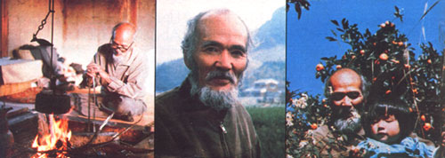

Masanobu Fukuoka: Japanese Organic Farmer
A Plowboy Interview with Masanobu Fukuoka, author of The One Straw Revolution, and a proponent of natural farming methods.
By the Mother Earth News staff.
July/August 1982
Masanobu Fukuoka, with his grizzled white beard, subdued voice, and traditional Oriental working clothes, may not seem like an apt prototype of a successful innovative farmer. Nor does it, at first glance, appear possible that his rice fields - riotous jungles of tangled weeds, clover, and grain-are among the most productive pieces of land in Japan. But that's all part of the paradox that surrounds this man and his methodofnatural farming.
On a mountain overlooking Matsuyama Bay on the southern Japanese island of Shikoku, Fukuoka-san (son is the traditional Japanese form of respectful address) has - since the end of World War II - raised rice, winter grain, and citrus crops . . . using practices that some people might consider backward (or even foolish!). Yet his acres consistently produce harvests that equal or surpass those of his neighbors who use labor-intensive, chemical-dependent methods. Fukuoka's systemoffarming is amazing not only for its yields, but also for the fact that he has not plowed his fieldsfor more than 30 years! Nor does he use prepared fertilizer - not even compost - on his land, or weed his rows, or flood his rice paddies.
Through painstaking experimentation, you see, this Japanese grower has come up with a method of agriculture that reflects the deep affinity he feels with nature. He believes that by expanding our intellect beyond the traditional confinesofscientific knowledge-and by trusting the inherent wisdom of life processes - we can learn all we need to know about growing food crops. A farmer, he says, should carefully watch the cycles of nature and then work with those patterns, rather than try to conquer and "tame" them.
In keeping with that philosophy, Fukuoka-san's fields display the diversity and plant succession that is a natural partofany ecosystem. In the spring, he sows rice amidst his winter grain . . . then, late in the year, casts grain seed among the maturing rice plants. A ground coverofclover and straw underlies the crops, deterring weeds and enriching the soil. In addition, the master gardener grows vegetables "wild" beneath the unpruned trees in his mountainside orchard. Naturally, such unconventional plots might look positively disastrous to traditional agronomists, but as Fukuoka points out to skeptical visitors, "The proof of my techniques is ripening right before your eyes!"
For many years, the Oriental gentleman's unique ideas were known only to a few individuals in his own country. In 1975, however, he wrote a book entitled The One-Straw Revolution, which was later published in the United States. Since then, he has been in great demand by groups eager to know more about this strange "new" attitude toward farming. In 1979 Fukuoka-san undertook an extensive tour of the United States . . . and while he was in Amherst, Massachusetts for a series of university lectures, he talked for several hours with Larry Korn, a studentofnatural farming methods and the editor of The One-Straw Revolution. Their conversation was conducted entirely in Japanese and later translated into the edited version printed here.
Incidentally, if you're puzzled by several instances of apparent contradiction in the following comments, consider that Fukuoka-like the Oriental philosophers who deliberately present students with what seem to be illogical statements or paradoxes-is perhaps trying to help people break habitual patternsofthought and develop new perceptions. Andbecause his natural farming does demand such an unaccustomed mode of thinking, Fukuoka-san warns that it is not for the timid or the lazy: "My method completely contradicts modern agricultural techniques. It throws scientific knowledge and traditional farming know-how rightout the window." What's left in the wakeofthat revolutionary (and sometimes admittedly befuddling) upheaval, however, should excite - and challenge - anyone who'd like to see a simpler, more natural form a of agriculture take root.
PLOWBOY: I notice that you're drawing, Fukuoka-san . . . what will the picture be?
FUKUOKA: It's a sketch of a mountain scene, and there's a poem with it:
Deep in the mountains, a gentle soul asks,
For whom do the wildflowers bloom?
For foxes and raccoons,
Who know the pine winds and
The spirit of the valley stream.
PLOWBOY: Can you explain what you mean by that verse?
FUKUOKA: Well, there are many ways of defining this "gentle soul". It could be a person . . . a flower . . . a tree . . . or even the grass. And if one could ask this soul why it lived all alone, deep in the mountains, it would answer, "I am not living here for anybody's sake. Just to listen to the fox and the raccoon, to talk to them and be with them . . . that is why I am living here."
PLOWBOY: Are you the figure I see in the drawing?
FUKUOKA: I'd like it to be me!
PLOWBOY: Well, it's certainly evident from your artwork and from your approach to farming that you value having a close relationship with nature. Were you raised in a rural setting?
FUKUOKA: Yes, I was an ordinary country boy, born in a simple country house. My father-who served as the leader of our small village-was a landowner and farmer. I grew up just as the other local children did . . . going to school and helping my parents and neighbors in the rice fields.
PLOWBOY: Did you begin farming as soon as you had finished school?
FUKUOKA: No, I first went to a special technical institute to study microbiology and plant pathology. Then I moved to Yokohama to become a quarantine officer at the Agricultural Customs Office. My job was to inspect, and experiment with, Japanese mandarin oranges and American oranges. I learned a lot there about the weaknesses and diseases of different plants . . . and greatly enjoyed my laboratory work. However, at the age of 25, I underwent a change of heart-and mind-that caused my life to be completely different from that time on.
PLOWBOY: Tell me about it.
FUKUOKA: Well, like many young people, I was having very large, ponderous thoughts about life . . . and my musings led to a lot of skepticism about the human condition. To add to my doubts, I became so ill during that period that there was, for a while, a question of whether or not I would pull through.
Following my eventual recovery, I spent many sleepless nights wandering the streets. The morning after one such episode-when it seemed as though everything were about to explode in my brain-a flash of insight came to me. I suddenly felt that all human existence is meaningless and of no intrinsic value. Humanity knows nothing of real worth at all, I decided, and every action we take is just a futile, empty effort. I also saw that nature is ideally arranged and abundant just as it is . . . therefore, I was sure that we should work in cooperation with the natural processes, rather than try to "improve" on them by conquest.
I know all this may sound preposterous, but whenever I try to put those thoughts into words, they seem to sound that way. The revelation wasn't something that can be easily explained to another person.
PLOWBOY: Why not?
FUKUOKA: Anyone who's had an experience similar to mine will understand instinctively . . . but there's nothing I can say to help those people who don't have this understanding or aren't even looking for it. For example, do you think there's such a thing as a ghost? Have you ever seen a ghost? [With a smile, he points over the inter viewer's shoulder.] Didn't you just see that one? People who've never seen a ghost usually can't believe in them. Those who have had such an experience, though, totally believe in the phenomenon . . . so there's no need to convince them.
PLOWBOY: How did this change in thinking affect your life?
FUKUOKA: I immediately quit my job at the Customs Office. Then I spent the next year or two traveling around the country, talking with people and trying many new experiences. Sometimes I camped in the mountains and sometimes near hot springs. Whenever I was in a city, I would sleep in temples or parks . . . and when I was in the country, I stayed at farmers' homes and worked in their fields with them. I actually started my wanderings with the intention of spreading my new understanding throughout the whole country . . . but whenever I spoke about the meaninglessness of human existence, nobody was interested in what I had to say! I was ignored as an eccentric. So I finally decided that in order to help people understand my theories, I'd have to demonstrate them in some concrete and practical way. I also needed to do that, of course, to convince myself that I was right.
Since I believe that farming is the most worthy of all occupations, I decided to return to my native village and become a farmer. I wanted to see whether I could apply my theory of the uselessness of human knowledge to agriculture . . . so that if people didn't understand my words, I could take them out to the fields and show them the truth of these ideas.
PLOWBOY: And you've been farming ever since?
FUKUOKA: Almost. During the Second World War, I was sent to work at the Agricultural Experimental Station at Kochi, where I had to fall back upon my scientific training. After the war was over, though, I joyfully returned to the mountains and resumed my life as a farmer.
PLOWBOY: How much land did you start with?
FUKUOKA: After the war there was a massive land reform in Japan-called the Nochi-kaiho-in which large landowners like my father lost most of their holdings. My father died soon after that, and I was left with one small rice paddy about a quarter-acre in size.
PLOWBOY: Did you begin practicing natural farming right away?
FUKUOKA: I had started experimenting in some of my father's mandarin orange orchards even before the war. I believed that - in order to let nature take its course-the trees should grow totally without intervention on my part, so I didn't spray or prune or fertilize . . . I didn't do anything. And, of course, much of the orchard was destroyed by insects and disease.
The problem, you see, was that I hadn't been practicing natural agriculture, but rather what you might call lazy agriculture! I was totally uninvolved, leaving the job entirely to nature and expecting that everything would turn out well in the end. But I was wrong. Those young trees had been domesticated, planted, pruned, and tended by human beings. The trees had been made slaves to humans, so they couldn't survive when the artificial support provided by farmers was suddenly removed.
PLOWBOY: Then successful natural farming is not simply a do-nothing technique?
FUKUOKA: No, it actually involves a process of bringing your mind as closely in line as possible with the natural functioning of the environment. However, you have to be careful: This method does not mean that we should suddenly throw away all the scientific knowledge about horticulture that we already have. That course of action is simply abandonment, because it ignores the cycle of dependence that humans have imposed upon an altered ecosystem. If a farmer does abandon his or her "tame" fields completely to nature, mistakes and destruction are inevitable.
The real path to natural farming requires that a person know what unaltered nature is, so that he or she can instinctively understand what needs to be done-and what must not be done-to work in harmony with its processes.
PLOWBOY: That attitude certainly denies the "manipulate and control" foundation of established modern agriculture. How did you progress from your traditional training to such an unusual concept of farming?
FUKUOKA: During my youth I had seen all the farmers in the village grow rice by transplanting their seedlings into a flooded paddy . . . but I eventually realized that that isn't the way rice grows on its own! So I put aside my knowledge of traditional agricultural methods and simply watched the natural rice cycle. In its wild state, rice matures over the summer. In the autumn the leaves wither, and the plant bends over to drop its seeds onto the earth. After the snow melts in the spring, those seeds germinate, and the cycle begins again. In other words, the rice kernels fall on unplowed soil, sprout, and grow by themselves.
After observing this natural process, I came to view the transplanting/flooded field routine as totally unnatural. I also guessed that the common practices of fertilizing a field with prepared compost, plowing it, and weeding it clean were totally unnecessary. So all my research since then has been in the direction of not doing this or that. These 30 years of practice have taught me that many farmers would have been better off doing almost nothing at all!
People often think, in their arrogance and ignorance, that nature needs their assistance to carry on. Well, the truth is that nature actually does much better without such "help" from humans! Once a field is healthy and working on its own, natural - or "noninterference"- agriculture becomes a real possibility. However, as my orange grove demonstrated, such a condition can't be initiated suddenly. In Japan and other agricultural countries, the land has been plowed by machines for decades . . . and before that it was turned by cows and horses. In fields such as those, you wouldn't have very good results in the beginning if you simply stopped cultivating the earth and adopted a do-nothing attitude. The soil must first be allowed to rehabilitate itself. Fertility can then be maintained by surface mulch and straw that break down into the soil.
PLOWBOY: For folks who may be unfamiliar with your book, The One-Straw Revolution, let's review the basic practices you follow in your natural system of growing grain, vegetables, and citrus.
FUKUOKA: First of all, I operate under four firm principles. The first is NO TILLING . . . that is, no turning or plowing of the soil. Instead, I let the earth cultivate itself by means of the penetration of plant roots and the digging activity of micro-organisms, earthworms, and small animals.
The second rule is NO CHEMICAL FERTILIZER OR PREPARED COMPOST. I've found that you can actually drain the soil of essential nutrients by careless use of such dressings! Left alone, the earth maintains its own fertility, in accordance with the orderly cycle of plant and animal life.
The third guideline I follow is NO WEEDING, either by cultivation or by herbicides. Weeds play an important part in building soil fertility and in balancing the biological community . . . so I make it a practice to control-rather than eliminate-the weeds in my fields. Straw mulch, a ground cover of white clover interplanted with the crops, and temporary flooding all provide effective weed control in my fields.
The final principle of natural farming is NO PESTICIDES. As I've emphasized before, nature is in perfect balance when left alone. Of course, harmful insects and diseases are always present, but normally not to such an extent that poisonous chemicals are required to correct the situation. The only sensible approach to disease and insect control, I think, is to grow sturdy crops in a healthy environment.
As far as my planting program goes, I simply broadcast rye and barley seed on separate fields in the fall . . . while the rice in those areas is still standing. A few weeks after that I harvest the rice, and then spread its straw back over the fields as mulch. The two winter grains are usually cut about the 20th of May . . . but two weeks or so before those crops have fully matured, I broadcast rice seed right over them. After the rye and barley have been harvested and threshed, I spread their straw back over the field to protect the rice seedlings. I also grow white clover and weeds in these same fields. The legume is sown among the rice plants in early fall. And the weeds I don't have to worry about . . . they reseed themselves quite easily!
In a 1-1/4-acre field like mine, one or two people can do all the work of growing rice and winter grain in a matter of a few days, without keeping the field flooded all season . . . without using compost, fertilizer, herbicides, or other chemicals . . . and without plowing one inch of the field! It seems unlikely to me that there could be a simpler way of raising grain.
As for citrus, I grow several varieties on the hillsides near my home. As I told you, I started natural farming after the war with just one small plot, but gradually I acquired additional acreage by taking over surrounding pieces of abandoned land and caring for them by hand. First, I had to recondition that red clay soil by planting clover as a ground cover and allowing the weeds to return. I also introduced a few hardy vegetables-such as the Japanese daikon radish-and allowed the natural predators to take care of insect pests. As a result of that thick weed/clover cover, the surface layer of the orchard soil has becomeover the past 30 years-loose, darkcolored, and rich with earthworms and organic matter. In my orchard there are now pines and cedar trees, a few pear trees, persimmons, loquats, Japanese cherries, and many other native varieties growing among the citrus trees. I also have the nitrogen-fixing acacia, which helps to enrich the soil deep in the ground. So by raising tall trees for windbreaks, citrus underneath, and a green manure cover down on the surface, I have found a way to take it easy and let the orchard manage itself!
PLOWBOY: Don't you also grow vegetables in a kitchen garden?
FUKUOKA: Actually, I raise such produce, in a semiwild manner, among the weeds all over the mountain. In my orchard alone I grow burdock, cabbage, tomatoes, carrots, mustard, beans, turnips, and many other kinds of herbs and vegetables. The aim of this method of cultivation is to grow crops as naturally as possible on land that might otherwise be unused. If you try to garden using." improved" high-yield techniques, your attempt will often end in failure as a result of infestation or disease. But if various kinds of herbs and other food crops are mixed together and grown among the natural vegetation, pest damage will be so low you won't have to use sprays, or even pick bugs off by hand.
To plant my vegetable crops, I simply cut a swath in the weed cover and put out the seeds. There's no need to top them with soil . . . I just lay the cut plants back over them as a natural mulch. Usually the resurgent weeds have to be trimmed back two or three times afterward to give the seedlings a head start, but sometimes just once is enough. Vegetables grown in this way are stronger than most people think. In fact, you can raise produce wherever there's a varied and vigorous growth of weeds . . . but to be successful, it is important that you become familiar with the yearly cycle of the indigenous weeds and grasses and learn what kinds of vegetables will best match them.
PLOWBOY: Have you encountered any really serious problems with disease or insect pests over the decades that you've been practicing natural farming?
FUKUOKA: Since I turned the fields back to their natural state, I can't say I've had any really difficult problems with insects or disease. Even when it looked as if something had gone wrong and the crops would soon be devastated, nature always seemed to bail me out in the end!
Of course, I have made mistakes . . . just as every grower does. However, I never really think of them as mistakes! Back in the beginning, for example, when 70% of a field was overgrown and unproductive and 20 to 30% was extremely productive, I saw my limited harvest as a success. I figured that if a small percentage of the field did produce, I could eventually make the rest of the acreage do just as well. My neighbors would never have been satisfied with a field like that . . . but I just viewed the "mistake" as a hint or a lesson. One of the most important discoveries I made in those early years was that to succeed at natural farming, you have to get rid of your expectations. Such "products" of the mind are often incorrect or unrealistic . . . and can lead you to think you've made a mistake if they're not met.
PLOWBOY: What about the wild grasses and weeds that grow right among your crops: Don't they ever threaten to get out of control?
FUKUOKA: Instead of relying on herbicides or mechanical cultivation to control weeds, I've always used legumes and other cover crops to limit the spread of the less helpful plants. I also throw straw on the fields as a mulch that will both discourage weeds and let the soil retain enough moisture to germinate seeds in the autumn dry season.
PLOWBOY: It all sounds like the ideal low-labor farming method. But what about the yields of your crops? Is it true that they compare favorably with those of conventional farms?
FUKUOKA: In the beginning my expectations and desires were not great . . . and my yields were not great, either! But as the condition of the soil stabilized over time and the fields returned to their natural state, my crop output began to rise steadily. I never noticed any dramatic changes, but eventually I found that I could grow rice without plowing or flooding the field all summer long, and still produce as much as the other farmers did with all their machinery and chemicals . . . sometimes more. My production has now stabilized at about 1,300 pounds, or 22 bushels, per quarter-acre for both winter grain and rice. That is close to the highest in Japan!
In the future, I expect that my yields of rice, barley, and other grains will continue to increase. After all, until recently I was growing the same kinds of crops that other farmers in the village-and, indeed, all over Japan-were planting. But as a result of practicing natural agriculture, I have now "developed" some new varieties, simply by allowing them to spring up in the fields. With those native seed cultivars, I think my farm has the potential to achieve the highest productivity in Japan . . . and possibly in the world, since my country leads the planet in average rice yields! If natural farming were used on a permanent basis, there'd be no reason why the production capability of any piece of land couldn't go far beyond its "chemical-based" levels . . . eventually approaching the highest yield theoretically possible, given the amount of energy reaching a field from the sun.
PLOWBOY: I assume that-with such favorable production figures-you've been able to support yourself and your family with natural farming.
FUKUOKA: I haven't made a lot of money, but my overhead costs are so low that I've never been in danger of going completely broke. For one thing, after I began farming this way, word got around that the oranges grown on my mountain were the largest and sweetest in the entire village. That fruit provides the greatest part of my income. Then, too, as my holdings increased and the soil improved, things got easier for us. Yes, I've been able to make a comfortable-though modest-living by practicing natural farming.
PLOWBOY: Has the large-scale agricultural "establishment" exhibited any interest in your ideas?
FUKUOKA: I first presented this "direct seeding noncultivation winter grain/rice succession" plan in agricultural journals 25 years ago. From then on, the method appeared often in print, and I introduced it to the public at large on quite a few radio and television programs . . . but nobody paid much attention to it.
In the past 15 years or so, though, it seems to me that the general attitude toward natural farming has begun to change. Various agricultural research scientists have highly acclaimed my no-till technique. You might even say that natural farming is becoming the rage! Journalists, professors, farmers, technical researchers, and students are all flocking to visit my fields and stay in my huts up on the mountain.
By living a natural lifestyle and demonstrating its usefulness... I feel I am serving humankind... the ultimate goal of natural farming is not the growing of crops, but the cultivation and perfection of human beings.
PLOWBOY: Why the sudden surge of curiosity about your farming techniques?
FUKUOKA: I think it's because many people have gotten very far away from nature. Everything in the modern world has become noisy and overcomplicated, and people want to return to a simpler, quieter life . . . the kind of life I live as an ordinary farmer. You see, to the extent that men and women separate themselves from nature, they spin out further and further from the unchanging, unmoving center of reality. At the same time a centripetal effect asserts itself, causing a desire to return to nature-that true center-even as they move away from it. I believe that natural farming arises from that unchanging, unmoving center of life.
It seems, also, that general recognition of the long-term dangers of chemical farming has helped renew interest in alternative methods of agriculture. Many people are looking at my methods and seeing that what they previously viewed as primitive and backward is perhaps instead far ahead of modern science!
PLOWBOY: You practice a low-cost, low-labor method of growing food that requires no heavy machinery, fossil fuels, or processed chemicals . . . and yet achieves yields comparable to those of more "modern" scientific methods. That sounds almost like a dream come true. There must be people trying natural farming all over the place!
FUKUOKA: Not really . . . because my method does seem like a dream to them. In fact, I think natural farming is actually a very frightening concept to many people! It entails a revolutionary attitude that could change the whole climate of our society and our civilization.
PLOWBOY: What would it take, then, to convince such individuals to try your methods?
FUKUOKA: It would be very difficult for single farmers or families to get started by themselves. Natural agriculture requires a great deal of work in the beginning-until the land is brought back into balance-and you can't do it alone unless you have a lot of time to devote to the effort.
The change might be brought about more easily on a village or small-town level, but I really think the best way to start this "one-straw revolution", as I call it, is on a large scale . . . through some sort of cooperative effort. The government, the agricultural co-ops, the farmers, the consumers-in other words, everyone-must decide that this is the direction in which our society should go. And, of course, if we don't get that kind of cooperation, the possibility of bringing about significant change in our farming methods is remote.
Most important, we've got to revise people's concepts of nature. In America, especially, the outdoors that's seen often isn't natural at all . . . it's an imitation, man-made nature. For example, look around the grounds of this university. You'll see beautiful lawns, soft and comfortable, planted here and there with trees. The foliage is indeed lovely, but these aren't the trees and grasses that originally evolved here. They've been put here by human beings for the benefit of other human beings. The native plants were smothered or exterminated . . . and this nonnative, exotic lawn grass was nurtured instead. Allowing such an artificial landscape to return to its natural state would be good for human beings and for all the other animals and all the plants that live on this planet. However, not everyone would appreciate it . . . there'd be more flies, mosquitoes, and other insects that people don't find very pleasant, and some would say, "Oh, how inconvenient. What a bother!"
PLOWBOY: Several weeks ago you started your American tour in California. Did you see "artificial nature" there, too?
FUKUOKA: It was really a shock for me to see the degenerate condition of California. Ever since the Spanish introduced their grazing cows and sheep, along with such annual pasture grasses as foxtail and wild oats, the native grasses have been all but eliminated. In addition, the ground water there has been overdrawn for agriculture, and huge dams and irrigation projects have interrupted the natural circulation of surface water. Forests have been logged heavily and carelessly, causing soil erosion and damage to streams and fish populations. As a result of all this, the land is becoming more and more arid. It's a dreadful situation . . . because of human intervention, the desert is creeping across the state, but no one will admit it.
PLOWBOY: Do you think the widespread adoption of natural farming techniques could help reverse that process and make California green again?
FUKUOKA: Well, it would take a few years for people to learn how to adjust and refine the weed/ground cover rotation, but I think the soil would improve rapidly if growers really attempted to help it. And if that were done, California could eventually become an exciting, truly natural place . . . where farming could be the joyous activity it should be. But if modern agriculture continues to follow the path it's on now, it's finished. The food-growing situation may seem to be in good shape today, but that's just an illusion based on the current availability of petroleum fuels. All the wheat, corn, and other crops that are produced on big American farms may be alive and growing, but they're not products of real nature or real agriculture. They're manufactured rather than grown. The earth isn't producing those things . . . petroleum is!
PLOWBOY: Haven't you said that you'd view a severe oil shortage as a positive development?
FUKUOKA: Of course. I believe that the sooner our oil supply lines dry up, the better. Then we'll have no choice but to turn to natural agriculture!
PLOWBOY: But the typical "agribiz" farm has hundreds or even thousands of cultivated acres. How could someone apply natural agriculture in such a setting?
FUKUOKA: First of all, there shouldn't be such large spreads. It's unfortunate that, in the modern American agricultural system, a very few people are producing the food for millions of others who live in the cities. In Japan, the average field is smaller than in the United States . . . but its yield per acre is much greater. I can do all the work on my own farm with hand tools, without using power machinery of any kind.
But I guess those mega-farms in your country would need some machinery, at least for harvesting. In the future, though, as more and more people move back to the country and begin to grow their own food on small plots of land, there'll be much less dependence on machines and fossil fuels . . . and natural farming techniques can begin to be used.
PLOWBOY: So you think that it would be feasible to someday adopt natural farming in North America?
FUKUOKA: Of course, of course! When you talk about nature, it doesn't matter whether you're referring to North America or Africa or Indonesia or China . . . nature is nature. After all, modern industrial farming is now being practiced almost everywhere in the world. In the same way, natural farming could be practiced almost everywhere.
I'm just a village farmer who has come visiting from another part of the same world. Through my one-straw research, I've come up with some important clues as to how people can relate to nature and live harmoniously with it . . . wherever they may be.
PLOWBOY: But wouldn't your methods have to be adapted to fit local growing conditions in this country?
FUKUOKA: It's true that each place is somewhat different. Here in Massachusetts we are very far from the Pacific Ocean and even farther from my home on the island of Shikoku . . . so it may seem as if the experience and knowledge that I've accumulated would not be applicable here. However, the research I did on that little farm eventually led me to a practical and tested method of crop rotation. So I would suggest that beginners at least start with the techniques I've already worked out, no matter where they live . . . even here on the Atlantic coast.
A person who does that will probably have some problems during the first year, and the results may not be exactly the same as mine. But it should then be obvious to that grower why things didn't work out. Maybe a certain crop was planted too late, or perhaps the wrong variety was used for that climate and soil. By the second year of understanding and practicing my principles, a person should see clearly what needs to be done on his or her own land. I tell everyone who wants to try natural farming to take the benefit of my study and research and use it as it is . . . that is the smart way to begin. If you immediately go off on your own and begin looking for the true "nature" of your area, it'll take you 20 or 30 years to find it, just as it took me years to do so in Japan. Instead, your first step in any attempt at natural farming should be to throw away your preconceptions . . . then you can learn by simply doing!
PLOWBOY: Are you telling us to abandon all logical reasoning?
FUKUOKA: Yes!
PLOWBOY: But Mr. Fukuoka, you did a lot of experimenting and research yourself in the process of developing the concept of natural farming. You used reason . . . and now you're telling us to discard it all?
FUKUOKA: Exactly! Throw away your own ideas for a moment and let the results of my experiments be the seed of some new ideas and ways of thinking. Many people might be tempted to think, "Hmm . . . my climate is totally unlike his, so rather than use white clover, I'll try this other ground cover." That line of reasoning could well take you off the track and lead you down a lot of blind alleys! Clover is necessary to keep the weeds back and to replenish the soil.
PLOWBOY: But there are many kinds of clover that could be used, aren't there?
FUKUOKA: Ah, you see? That's exactly what I mean: That's your reason speaking! Don't question so much. If I suggest white clover, use white clover. If I suggest red clover, then use red clover. Over the years I've tried vetch, alfalfa, lupine, trefoil, and many kinds of clover . . . and I reached the conclusion that for natural no-till rotation of grains and vegetables, and as a ground cover in the orchard, white clover is best.
My findings have been verified by others, too. When I visited Rodale's Organic Farming Research Center in Pennsylvania recently, the people there showed me the experiments they've been doing for several years in interplanting grains and row crops with clover and other ground covers. And you know, the plots where they were having the greatest success were the ones in which they were using white clover!
PLOWBOY: In the Pacific Northwest, there's a network of organic farmers and gardeners called Tilth. They've started a "clover project" in which members in Oregon, Washington, Idaho, and British Columbia plant various types of clover in barley and corn fields, apple orchards, and vegetable gardens . . . all to gain experience with that cover crop. Don't you think that sort of experimentation is worthwhile?
FUKUOKA: Well, yes, it's fine . . . but the results are already here and available, right in front of us! I did those kinds of experiments 25 years ago, and now others could benefit from my experience if only they'd look at the results. They could save themselves a lot of time and effort by just taking the shortcut of believing.
Americans, I think, find it difficult to believe: They have to experiment and see for themselves. But believing is the most direct approach.
PLOWBOY: Some people have noticed a spiritual, almost mystical quality to your theory of farming. Do you feel you're receiving insight and guidance from a divine source?
FUKUOKA: Although natural farming-since it can teach people to cultivate a deep understanding of nature-may lead to spiritual insight, it's not strictly a spiritual practice. Natural farming is just farming, nothing more. You don't have to be a spiritually oriented person to practice my methods. Anyone who can approach these concepts with a clear, open mind will be starting off well. In fact, the person who can most easily take up natural agriculture is the one who doesn't have any of the common adult obstructing blocks of desire, philosophy, or religion . . . the person who has the mind and heart of a child. One must simply know nature . . . real nature, not the one we think we know!
PLOWBOY: Can you be more specific about what that attitude should be?
FUKUOKA: Many people think that, when we practice agriculture, nature is helping us in our efforts to grow food. That is an exclusively human-centered viewpoint . . . we should, instead, realize that we are receiving that which nature decides to give us. A farmer does not grow something in the sense that he or she creates it. That human is only a small part of the whole process by which nature expresses its being. The farmer has very little influence over that process . . . other than being there and doing his or her small part.
People should relate to nature as birds do. Birds don't run around carefully preparing fields, planting seeds, and harvesting food. They don't create anything . . . they just receive what is there for them with a humble and grateful heart. We, too, receive our nourishment from the Mother Earth. So we should put our hands together in an attitude of prayer and say "please" and "thank you" when dealing with nature.
PLOWBOY: Do you think that, partly by helping foster such different attitudes, your method could influence more than the way we grow our food?
FUKUOKA: Yes, natural farming could lead to changes in our way of life that would help solve many of the problems of our present age. I think that people are starting to have misgivings about the modern world's ever-accelerating growth and scientific development, to question such things as nuclear power plants and the massive slaughter of great whales, and to realize that the time for reappraisal has arrived.
By living a natural lifestyle and demonstrating its usefulness in this day and age, I feel I am serving humankind. As the steward of my rice fields, I am making my stand against the need to use destructive technology or eliminate other forms of life. After all, the problems of our time are ones all of us must face in our own hearts and deeds. As I see it, the ultimate goal of natural farming is not the growing of crops . . . but the cultivation and perfection of human beings.
 |
 |
|